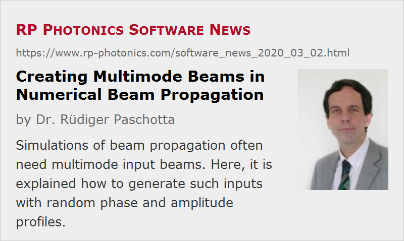

Creating Multimode Beams in Numerical Beam Propagation
Posted on 2020-03-02 in the RP Photonics Software News (available as e-mail newsletter!)
Permanent link: https://www.rp-photonics.com/software_news_2020_03_02.html
Author: Dr. Rüdiger Paschotta, RP Photonics Consulting GmbH
Abstract: Simulations of beam propagation often need multimode input beams. Here, it is explained how to generate such inputs with random phase and amplitude profiles.

When doing numerical simulations of beam propagation in multimode devices – for example in multimode fibers and fiber-optic pump combiners – one of the first encountered questions is how to generate a beam profile which resembles a multimode input (a multimode beam).
It turns out that this is indeed a substantially more difficult question than creating single-mode input profiles. That begins with the problem that one usually does not have a precise specification for the input beam. For example, you just may have a given beam profile (e.g. Gaussian or supergaussian) and a certain beam divergence, but obviously these few parameters do not determine a full two-dimensional phase profile. For numerical beam propagation, however, we need a full field of complex amplitudes as the input – how to produce that?
One possible approach is to use the given intensity profile and combine that with a phase profile exhibiting random and irregular fluctuations. You may adjust the magnitude of those fluctuations (e.g. quantified with an r.m.s. value) such as to obtain the given beam divergence. Technically, this can just be a bit tricky: how exactly could one produce a two-dimensional random phase profile with reasonable statistical properties, ideally automating the process such that it reaches the given beam divergence?
A Method for Generating Random Input Profiles
Here is a quite practical method which I often use:
- You start with a field of complex amplitudes which (a) has the given intensity profile and (b) completely random and uncorrelated values of the optical phase for each grid point. That's quite easy to do – only, that profile will exhibit a huge beam divergence and can therefore not be the final solution.
- Then you apply a two-dimensional spatial Fourier transform. That will exhibit a very broad distribution according to the huge beam divergence. You now filter the field in the Fourier domain simply by multiplying each Fourier amplitude with a filter function – for example, simply a top-hat or a Gaussian function in Fourier space. The width of that function is calculated from the wanted divergence. That way, you suppress the high-frequency components and thus limit the divergence.
- Transform that back to real space, and you have the wanted input field! In some cases, you may want to apply another filter function in real space, but often that is not necessary.
The described procedure may seem to be difficult to implement, but it is not really that hard. In the RP Fiber Power software, you just need a couple of code lines as those (after the definition of various input parameters, not shown here):
defarray A0%[0, (N - 1) * dr, dr; 0, (N - 1) * dr, dr] (periodic)
{ array for complex input amplitudes }
sg(x2) := exp(-3 * x2^8)
{ normalized super-Gaussian function,
made such that the values at x2 = x^2 = 1 are already pretty small }
calc
begin
{ Calculate the initial beam profile: low spatial coherence,
but high enough for efficient launching}
var f_max, df, f_m, P;
{ First step: top-hat intensity profile
(according to fiber core diameter) with totally random amplitudes }
processarray_e(A0%[], '=',
if x^2 + y^2 <= r_co^2 then ReIm(rnd(-1), rnd(-1)), 'x-,y-');
{ Filter out higher spatial frequency components }
FFT(A0%[], A0_f%[], +1);
{ Fourier transform, resulting in new array A0_f%[] }
df := 1 / (2 * r_max);
f_max := 0.5 * N * df;
f_m := NA_in / lambda;
{ maximum allowed spatial frequency based on NA of fiber }
processarray_e(A0_f%[], '*', sg((f_x^2 + f_y^2) / f_m^2), 'f_x-,f_y-');
FFT(A0_f%[], A0%[], -1); { inverse Fourier transform }
{ Filter again in real space: }
processarray_e(A0%[], '*', sg((x^2 + y^2) / r_co_in^2), 'x-,y-');
{ Normalize the power to 1 W: }
P := arraysumsqr(A0%[]) * dr^2;
processarray(A0%[], '/', sqrt(P));
end
A0%(x, y) := A0%[x, y]
{ amplitude profile function taking values out of the array }
Here we greatly profit from the availability of functions like processarray(), which do certain operations with the full two-dimensional arrays – avoiding nested loops, which are more cumbersome to write and slower in execution. By the way, such code can be executed on an ordinary PC within a fraction of a second. Here is an example profile obtained with that code:

If you wonder how to develop such a piece of code within a reasonable time: as a software customer of us, just ask me, and you get it with no effort. Diligent technical support makes life easy.
How About the Structured Intensity Profile?
As you can see in our example case, the resulting intensity profiles are generally quite structured – not the top-hat profile with which we started in this example case. How can you reconcile that with flat profiles as you can often observe in reality?
Well, for numerical beam propagation we work with monochromatic fields, and those cannot be flat – to understand that, consider them as superpositions of many fiber modes. So if in reality you have a flat beam profile, it must be a polychromatic input – for example, an input beam from a laser diode with a certain optical bandwidth of e.g. a few nanometers. Each of its frequency components will have a rather structured profile, but that looks different for each frequency component, and when adding up the profiles of those, the structures are more or less washed out.
In some cases, you may want to properly simulate that by doing numerical beam propagation with multiple monochromatic fields at slightly different optical frequencies and adding up the resulting intensity profiles. We can do that; the problem may only be that for a large number of frequency components you will require correspondingly longer computation times. Often, however, you can regard a single frequency component as being representative – particularly in situations where the device has a large number of guided modes.
Alternative Method Based on Guided Modes
Briefly describe a simple alternative method for the generation of a multimode profile. Here, you utilize the guided modes, calculated by the mode solver. You construct the input field as a superposition of all guided modes, each one having a random optical power and optical phase according to properly defined functions, e.g. such as to obtain the right kind of spatial profile and beam divergence. For example, you can reduce the beam divergence by assigning lower powers to higher-order modes.
That method differs from the previously explained one in various aspects:
- It is even a conceptually a little easier.
- It naturally produces a profile consisting only of guided modes, fully suppressing any power in cladding modes. That may be useful in some cases, but unacceptable in others.
- The method is not practical in cases where the number of guided modes is very large, because the computation of all those modes may be too time-consuming or even going beyond the capabilities of the mode solver.
So it depends on the situation which method you should choose.
Concluding Remarks
You have seen that somewhat tricky aspects are involved in the generation of multimode beam profiles, as required for simulations with numerical beam propagation – for example, for investigations and optimizations of multimode devices such as fiber-optic pump combiners, splitters and cladding mode strippers.
For a newcomer, this may look somewhat frightening. However, keep in mind that when doing this with our software, you would not only obtain a rather powerful piece of software, but also diligent and helpful support. I personally take care that our users obtain what they need – for example, carefully worded explanations of physical issues, suggestions for the use of certain methods and pieces of script code, or even complete scripts. For those who do not want to deal with all those technicalities at all, I can even provide a nicely worked out script containing a custom form, where the users only have to enter their input parameters and push a button for starting the calculation, which then produces the needed numerical and graphical output. Here is an example for such a form for simulations on tapered multimode fibers:
I would also like to emphasize that it is essential to have a software with extensive scripting capabilities, because otherwise you could hardly have the required degree of flexibility for implementing a wide range of simulations, using different methods – even methods which the software developer has never anticipated to use.
This article is a posting of the RP Photonics Software News, authored by Dr. Rüdiger Paschotta. You may link to this page, because its location is permanent.
Note that you can also receive the articles in the form of a newsletter or with an RSS feed.
|  |
If you like this article, share it with your friends and colleagues, e.g. via social media:
These sharing buttons are implemented in a privacy-friendly way!